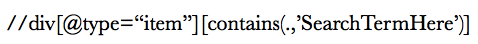
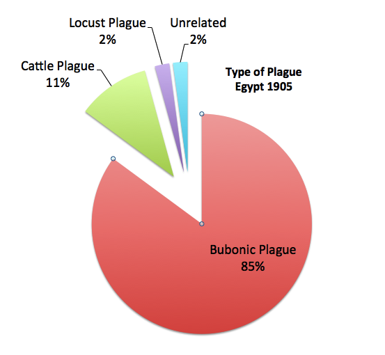
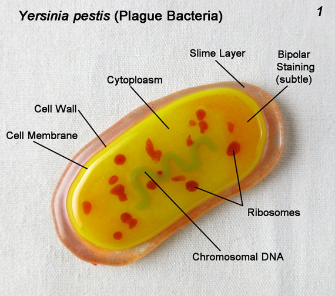
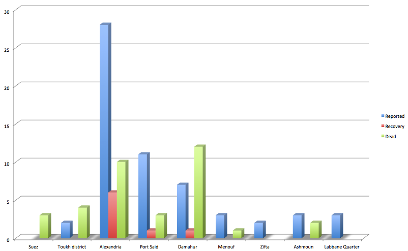
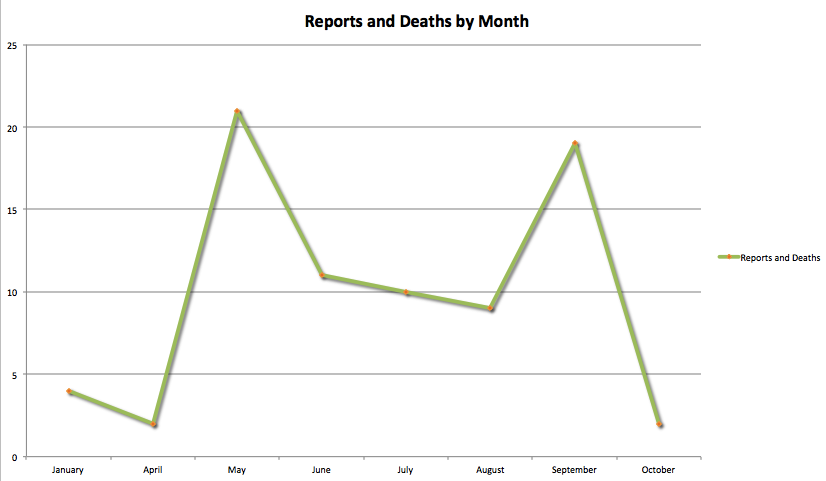

Bubonic Plague In Egypt, 1905
The goal of this final project was to focus and analyze instances of ‘disease’ found within the pages of the Egyptian Gazette in the year 1905. Each student in the class was allocated a week to digitize the paper’s contents, so the the year’s contents could then be searched and analyzed by each member of the class for their individualized final projects. The results from the students’ collaborative efforts over time, and the large volume of data obtained from these searches refocused the shape that the final project would take. Instead of analyzing instances of ‘disease,’ a very broad spectrum, the focus then shifted to the analysis of a more narrow and repetitive disease called the ‘Bubonic Plague’, or the ‘Plague.’
Before analyzing the results of the search, some hurdles had to to be overcome. For instance, utilizing the editing platform oXygen and its search field xPath query was difficult at first. Certain formulas needed to be understood and then used which also required a consistency on those who contributed to the database. Fortunately, Dr. Will Hanley paved the way for those utilizing these search features by presenting the actual search feature formulas as well as explaining the use for each.
Some results in the search did contain the word ‘plague,’ but sometimes the surrounding contents were not legible due to the issue with the OCR software. The OCR was used to transmit the .jpg content to a .text format, but in most instances this software did not work and required the user to type the information directly from the .jpg itself, in some instances, the misinterpreted OCR results were simply not corrected.

The most basic formula (shown above) was used in searching for instances of Bubonic Plague. This search function essentially searches for any term that was housed within a ‘div’ tag. There was some difficulty in using the most basic of search functions in that the search yielded some results that were not exactly relevant to the specific disease Bubonic Plague. Further, there were subtleties that were found (by accident) in the search function. For instance, a search of plague (lowercase) yielded 115 results and a search of the word Plague (uppercase) yielded 50 results. The uppercase version showed more concrete information on the actual disease and most of the results had the word plague mentioned multiple times. This also serves to show the power of the oXygen editing platform and the xPath query function.
The next issue was to determine how to analyze the results that were found within a year’s worth of information housed within the Egyptian Gazette newspaper (see pie-chart below). In addition to the contents of the Gazette, outside sources also guided the direction of this paper. One instance, as you will see below, is the time of year that the bubonic plague frequented certain areas of Egypt.

Fifteen percent of the word occurrences of ‘plague’ found within the Egyptian Gazette were of other meaning than the actual Bubonic Plague that affected humans and warrant at least some attention due to its involvement within the Gazette. Eleven percent of these word occurrences affected cattle and was thus termed: “Cattle Plague.” An article written by W. Littlewood, M.R.C.V.S., chief veterinary inspector Sanitary Department, aptly titled, ‘Cattle Plague in Egypt in 1903-0405,’ The Journal of Comparative Pathology and Therapeutics, 1/1/1905, Volume: 18, Page 312-321, indicated that the cattle plague made entry into Egypt as a result of trading with countries to the east and south: “
The first (cattle plague) invasion of Africa during the last twenty years was undoubtedly due to the introduction of cattle either from Arabia through Aden, or to shipments from Bombay to Massowah in the winter of 1887 and 1888, during the war between Italy and Abyssinia. From Massowah the disease rapidly spread over Italian territory, and thence to Abyssinia. We have no definite information as to whether the disease entered the now Anglo-Egyptian Soudan at the time, but if such was the case the losses must have been small, as there were large numbers of cattle in the Soudan when it was occupied by the Anglo-Egyptian Forces a few years later.
Two more items of discussion before getting into the bubonic plague. 1) Words unrelated to the disease, as an example, mention the “plague of social evils in Cairo;” hence, the use of this term is not relevant to the article, and 2) It is not entirely impossible, that with the lack of tools and modern information, that some diseases may have been categorized as the bubonic plague as opposed to the flu, though there is little evidence that has been shown that points to the contrary.
Some information about the bubonic plague, also known as, the Black Death. As noted in a previous post, the bubonic plague was not confined to Medieval Europe (as many readers would suspect). In fact, the Bubonic plague has existed for thousands of years, the first known case being recorded in China dating back to 224 B.C.E.. The most significant outbreak, and most noticeable, occurred in Europe in the mid-fourteenth century over a five year period (1347 to 1352). During this time period, sources indicate that at least 25 million people died, about one-third of the continent’s population (these numbers are disputed). The often disputed claims as to the cause of such a disease was further investigated in 2010 and 2011, when researchers analyzed DNA from some of its European victims. The consensus to date is that the pathogen responsible was the Yersinia pestis bacterium (shown below), which most likely caused several different forms of the plague. Seeing an outbreak within the borders of Egypt, with so few deaths was incredible, which warrants further understanding of this disease (as well as bacterial resistance and natural selection), how it was spread and who it affected. The collaborative effort of students within this course have shown that the Egyptian Gazette mentioned that a minimum of 39 cases were under investigation during the year of 1905. With the plague’s notorious reputation, the Gazette’s allocated space to this pandemic is sapient, especially due to the many cattle deaths in the area within that same time period.

As noted above, a minimum of 39 cases (85% of plague responses), usually involved multiple people that had an incidence of bubonic plague. The problem with these numerous responses to the bubonic plague is they are a very short summary of each occurrence, not giving much information on the statistics of those affected, just that they had either caught the disease or died:
- January 4th - Today's bulletin records a fatal case and two deaths at Suez.
- January 4th - Case of Plague on Steamer - The SS “City of Agra,” which arrived at Suez yesterday from Calcutta, had on board a suspected case of plague. The steamer was disinfected by the quarantine authorities and the patients were conveyed to Moses Wells for treatment
- April 18th - The Plague .—During last week, only one case of plague was reported throughout Egypt this occurred in the Toukh district.
- April 20th - A case of plague is reported from Toukh today.
- May 3rd - One fatal case of plague was reported from Toukh yesterday.
- May 6th - Yesterday's plague bulletin records a recovery at Alexandria. No cases are reported today.
- May 8th - A fresh case of plague is reported from Toukh today.
- May 9th - Last week, five cases of plague were reported throughout Egypt (1 at Port Said, 1 at Barchoum-ei-Soghra, 1 at Tant-el-Ghezireh and two at Kom-el-Atroun, Toukh district, province of Kalioubieh.
- May 17th - Two cases of plague, the victims both being Greeks, are reported from Damanhour today.
- May 23rd - A new case of plague has been admitted into hospital at Menouf, where a fatal case has also occurred.
- May 29th - Eight cases of plague have been notified in Egypt since the 21st inst., viz, 2 at Mi-Ghamr, 3 at Menouf, 2 at Port Said, and 1 at Alexandria. One death from Plague was reported yesterday from Damanhour and also 1 from Menouf. There are now eight cases under treatment.
- May 29th - The English streamer “Van Colquhoum” which left Bombay on the 12th inst., arrived at Suez on Friday last with a case of suspected plague aboard. Dr. Vay stated that on examination he found that the patient was suffering from a bubo in the left femoral region. There was no doctor on board the vessel but the capital informed Dr. Vay that the patient, who is an Indian, fell ill four days after leaving Bombay and that for three days his temperature was 40 to 40.5 Centigrade, after which he gradually improved, and his condition is now satisfactory. After disinfection the vessel was allowed to proceed through the canal in quarantine.
- June 3rd - Yesterday's bulletin records two cases (one fatal) and a death in hospital at Daman hour.
- June 27th - Yesterday's bulletin records two cases at Zifta, one fatal case and one death at Damanbour, and one case and one death Ashmoun.
- June 28th - Yesterday's bulletin records a fatal case at Alexandria, the victim being a native who worked in a cafe near Mohamed Aly square, and who was found dead at his house. Three new cases and two deaths are reported from Damanbour, and one case from Toukh district.
- June 29th Yesterday's bulletin records two new cases and two deaths in hospital at Damanbour.
- June 30th Yesterday's plague bulletin records one fresh case at Alexandria, one recovery at Port Said, one fresh case at Toukh, and one death at Ashmoun. There are now 21 cases under treatment. Dr. W. MacCarthy Morroghy has been temporarily appointed to plague duty.
- July 1st - Yesterday's bulletin records a fatal case at Port Said and another at Ashmoun.
- July 7th - The medical officer in charge of the Labbane quarter has ordered a cordon to be drawn round two houses where deaths have occurred which are believed to be directly due to bubonic plague.
- July 11th - Yesterday's bulletin records a fatal case at Alexandria, the victim being a native fisherman who was found dead at his house at Khattabieh. A fatal case is reported from Ashmoun, a death from Damanhour, and a recovery from Menouf.
- July 12th - Yesterday's bulletin records a fresh case and a recovery at Damanhour, and a recovery at Alexandria.
- July 13th - Yesterday's bulletin records a fatal case at Alexandria and another at Part-Said. The former was that of a young native girl who was found dead at her home at Tonbughie.
- July 15th - Yesterday's bulletin records a death in hospital at Damanhour and a recovery at Menouf.
- August 28th - Last week's bulletin reports the notification of only five cases of plague, four of which occurred at Alexandria and one at Port Said. Three deaths and three recovered were recorded at Alexandria, and one recover at Dekerness. One new case was admitted to hospital at Alexandria, and also one each at Assouan and Damietta yesterday, and a Berberin workman was found dead at Alexandria on the same day. From the first of January to date there have been in all 237 cases of plague. There are at present thirteen cases under treatment.
- August 29th - Yesterday's plague bulletin reports one new admission to hospital and two deaths at Alexandria. The new case is a native boy of the Karmous district, and the two fatal cases are a native boy found dead at his house in the Gumruk quarter, and a Berberin saïs of the Labban quarter.
- September 4th - During the week ending the 2nd inst thirteen cases of plague were reported for the whole of Egypt, eleven at Alexandria, one at Damietta, and one at Da-boud in the market and province of Assouan. Between January 1 and September 2, 1905 246 cases of plague have been reported against 786 during the corresponding period of the previous year. Saturday’s bulletin reports two deaths at Alexandria, two native girls of the same family succumbing in the Minet el Bassal district Sunday's bulletin reports three admissions to hospital at Alexandria and one death Port Said.
- September 9th - A native boy was found dead in a house in the Bab Sidra Barrani on Sunday. This is only case of plague reported in yesterday’s bulletin.
- September 9th - Yesterday bulletin reports the admission to hospital of a shawish of the Labban quarter, Alexandria. One recovery is also reported.
- September 22nd - Yesterdays plague bulletin reports three recoveries at Alexandria. No fresh cases have been notified.
- September 25th - Only one fresh case of plague occurred in Egypt throughout last week, namely at Alexandria, and all other places are declared free.
- October 9th - Only one case of bubonic plague was notified at Alexandria last week, there being no case in any other town in Egypt, and the number under treatment is now three. From the 1st of January to Saturday last 160 cases had all been notified as against 812 during the corresponding period of last year.
- October 10th - Only one case of bubonic plague was notified at Alexandria last week, there being no case in any other town in Egypt, and the number under treatment is now three. From the 1st of January to Saturday last 160 cases had in all been notified as against 812 during the corresponding period of last year
The summaries above were calculated and placed in the bar graph below in terms of location with regard to the plague:

If you have noticed the summaries above do not fully match the bar-graph below it. It has been noticed that the ‘latest’ date of September the 4th indicates that between January 1 and September 2 of 1905, there were 246 cases of plague have been reported against 786 during the corresponding period of the previous year. This information says a few things,
- There are 540 fewer cases reported in Egypt during the same time period in 1904, and 2) The Egyptian Gazette only sporadically covered the events of the bubonic plague. So it is likely that the Gazette received the tally of plague incidents from another source and is not in itself the main repository of this information. These figures then (the totals) cannot be discounted entirely, rather, they can be compared with other institutions for accuracy.
Further Investigation Warranted
The quoted material below brings attention to the time of year that Egyptians receive incidents of the plague. An effort to corroborate the information below was undertaken by adding up what information was accessible from each student's week of study. See line graph at bottom in conjunction with the ‘areas of plague’ bar graph above.
Where the plague begins, northern or southern Egypt, seems to have effected the timing of the plague. People feared plague that arrived from the south more than those that began in the Mediterranean ports. Mr. Alan Mikhail reports that plague in Upper Egypt (the south) ran from March to May, in mid-Egypt from April to June, and in the delta and Mediterranean ports from May to October. The flea’s intolerance to the climbing dry summer heat that travels from south to north over the late spring and summer accounts for this rolling plague season. So if a plague begins in the south and travels north ahead of rising summer temperatures, the death toll of the plague throughout Egypt will be much greater. If it starts at a Mediterranean port and travels south, then we have two waves heading toward each other and the summer heat ends the plague. Egyptians believed that risk of plague was over for the year by mid-June. In 1791 the plague arrived in late winter, peaked in early spring, and dwindled by summer. A fair amount has been written lately comparing epidemiology of the Black Death with the third pandemic and other modern outbreaks. The shifting Egyptian plague season a good reminder of how important local climate is to insect transmitted disease. In conclusion, Mikhail.. argues persuasively that plague was a regular enough feature of the Egyptian environment that it should be considered as part of a cycle of environmental disaster that regularly visited Egypt. Mikhail also reminds us of Egypt’s importance in the study of plague up to early modern times. (Alan Mikhail, (2008). The Nature of Plague in Late Eighteenth-Century Egypt Bulletin of the History of Medicine, 82 (2), 249-275 DOI: 10.1353/bhm.0.0031)

Though there are some similarities with the results and the times of year mentioned by Mr. Mikhail, there needs to be more data covering the entire year.
In conclusion, this is a great start for those that wish to learn more about the plague and how it has affected Egypt as a whole. The times of year and areas feared by Egyptian citizens, namely the Mediterranean ports and ‘Upper’ Egypt could have affected many areas of life, trade, travel and more. This information could then be considered when evaluating other specialties and trades.
Erek Cyr
Student
The author, a student at Florida State University, was enrolled in the digital microhistory lab in fall 2016.